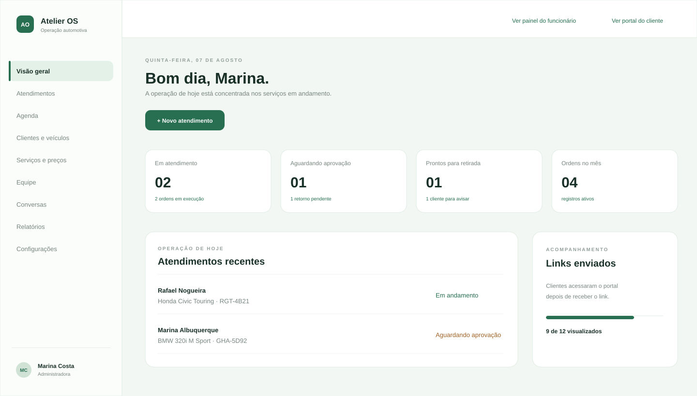
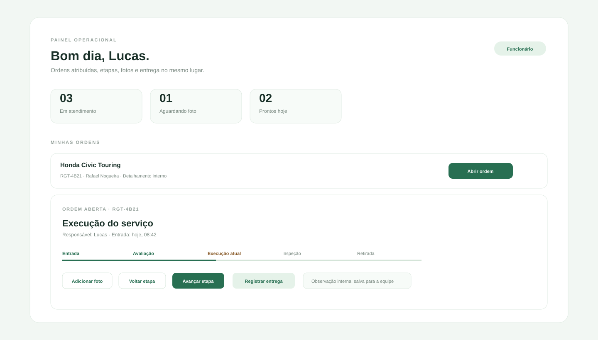
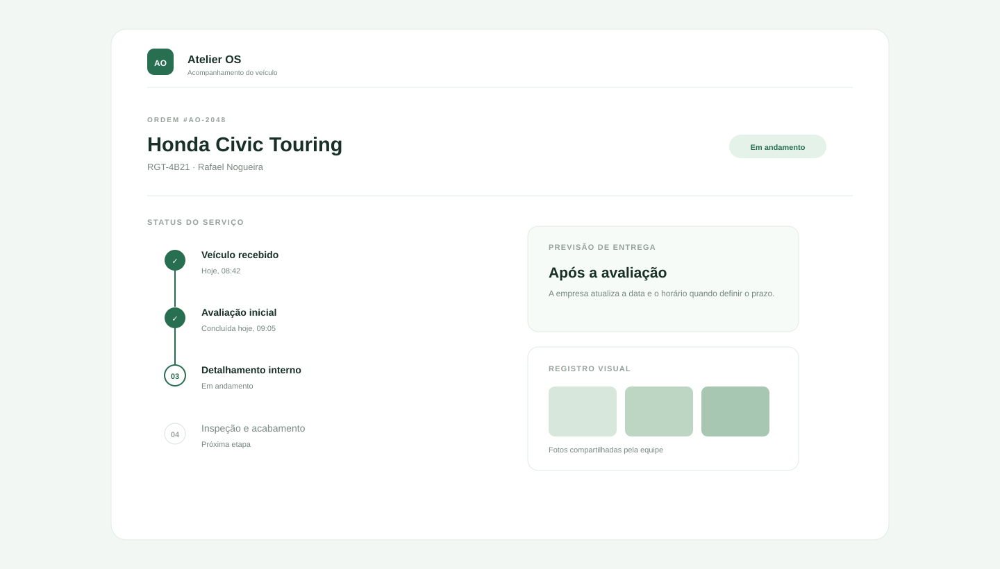
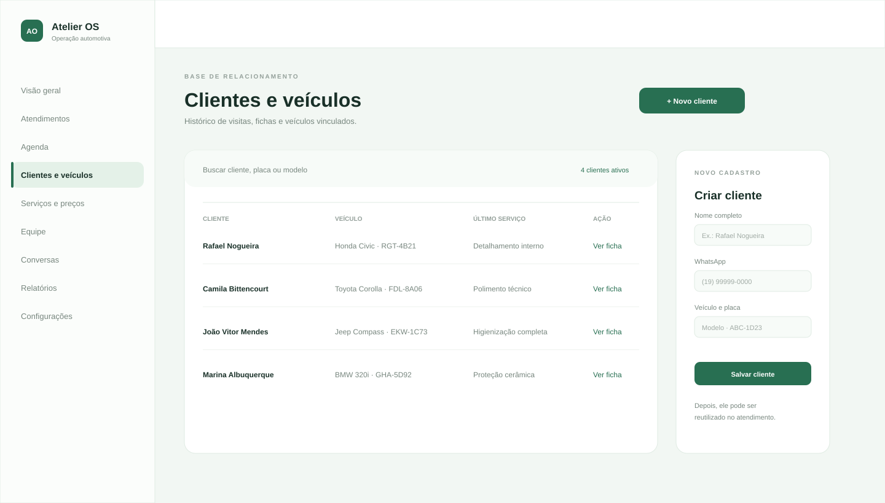

Carros sem uma leitura clara do status
Recebidos, em execução, prontos ou aguardando retirada acabam misturados em conversas diferentes.
Um sistema de gestão para estética automotiva que deixa carros, equipe, clientes e andamento dos serviços visíveis em um só lugar.

O problema não é falta de esforço. É depender de mensagens soltas, planilhas, papel e memória para administrar uma operação que já ficou maior.
Recebidos, em execução, prontos ou aguardando retirada acabam misturados em conversas diferentes.
Orçamento, placa, serviço, retorno e histórico ficam difíceis de recuperar quando mais se precisa.
Sem responsáveis e etapas visíveis, o proprietário precisa perguntar, conferir e lembrar de tudo.
Sem indicadores simples, fica difícil entender o que vende, o que trava e onde o dinheiro está.
A função do sistema é transformar o fluxo diário em informação organizada - da entrada do carro à entrega, sem perder o contexto.
A recepção registra. A equipe executa. O proprietário acompanha. O cliente recebe visibilidade do próprio carro. A imagem abaixo é uma prévia estática baseada na estrutura visual e nos fluxos do Atelier OS, usada para demonstrar a experiência que será personalizada para cada empresa.
Cliente já cadastrado, placa, serviço, responsável e horário ficam no mesmo fluxo.
A ordem mostra o que precisa ser feito, em qual etapa está e quais fotos devem ser adicionadas.
O painel mostra o que está acontecendo hoje e onde existe um gargalo.
Cada área tem uma função diferente. Na versão implantada, todas trabalham sobre a mesma base de dados, evitando retrabalho e reduzindo a dependência da memória.
Indicadores do dia, carros em cada status, retiradas e alertas da operação.
Ordens de serviço com status, etapa atual, serviço, responsável, fotos e observações internas.
Horários reservados, entradas previstas e retiradas organizadas em uma visão de calendário.
Cadastro, histórico de visitas, veículos vinculados, placas e ficha de atendimento.
Serviços oferecidos, descrições e valores usados na criação do atendimento e do orçamento.
Fila para organizar retornos e abrir a ordem relacionada; a integração real com WhatsApp depende da API oficial.
Cadastro de administradores, atendentes e funcionários, com permissões definidas por função.
Resumo operacional com volume de ordens, status, pendências e itens prontos para retirada.
Avisos ao cliente, responsável obrigatório, fotos na finalização e perfis de acesso.
Ele tem uma visão operacional, feita para executar o trabalho: ordens atribuídas, etapas, fotos, observações internas e registro da entrega.
O administrador cadastra a equipe e define quem fica responsável por cada atendimento. O funcionário abre a própria ordem e encontra o contexto completo do veículo.

Esta imagem mostra uma prévia estática da tela de acompanhamento: status, etapas, previsão e a área em que as fotos do serviço aparecem para o cliente.

Na versão implantada, o cliente acompanha status, previsão e fotos compartilhadas sem precisar perguntar a cada hora. Ele não altera a ordem e não vê dados internos da empresa.
Todas as opções abaixo usam a mesma prévia estática do dashboard e preservam menu, cards, espaçamento e hierarquia do Atelier OS. As cores são apenas referências: na implantação, a empresa escolhe a identidade visual que preferir.
A proposta é vender clareza: a demonstração mostra a lógica e a experiência; a implantação transforma isso em uma operação configurada para cada cliente.
Integrações externas, como API oficial do WhatsApp, hospedagem específica e módulos adicionais podem ser avaliados separadamente conforme a necessidade da empresa.
A proposta não é apenas um dashboard bonito. É um fluxo de trabalho em que a recepção registra, a equipe executa, o proprietário acompanha e o cliente recebe somente o que precisa ver.
Na recepção, a pessoa pode buscar pelo nome, placa ou modelo, abrir a ficha existente e criar uma nova ordem reaproveitando os dados. O histórico de cada visita continua vinculado ao cliente.
